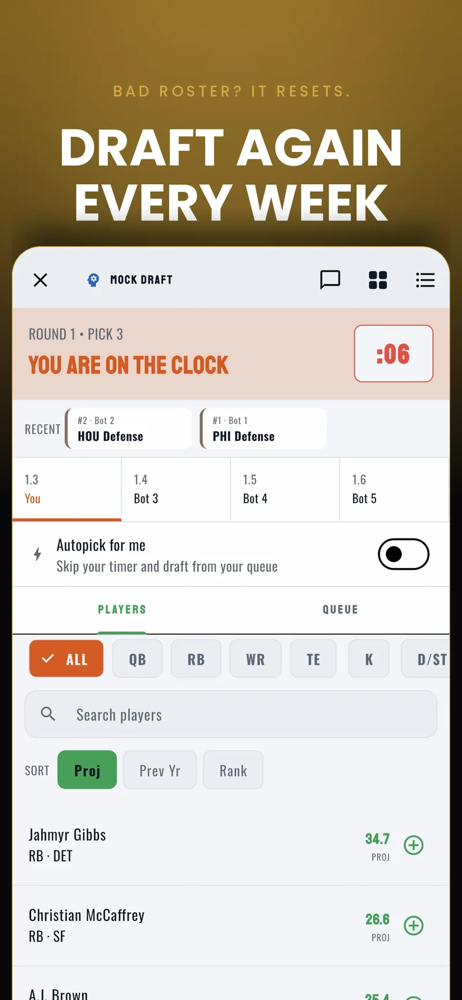
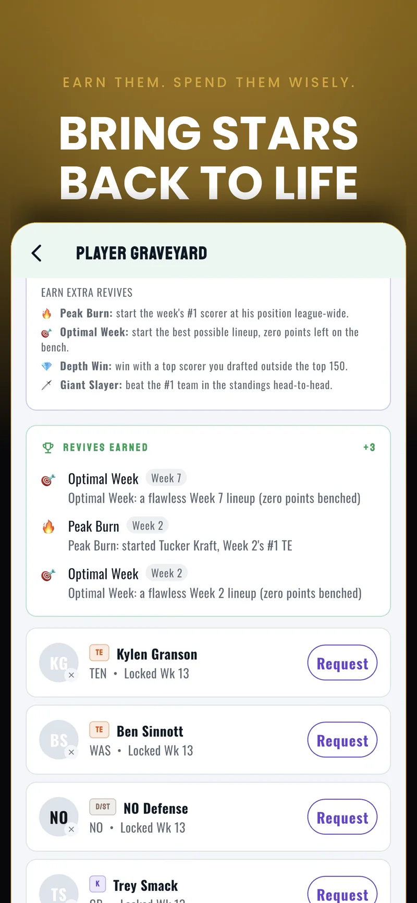
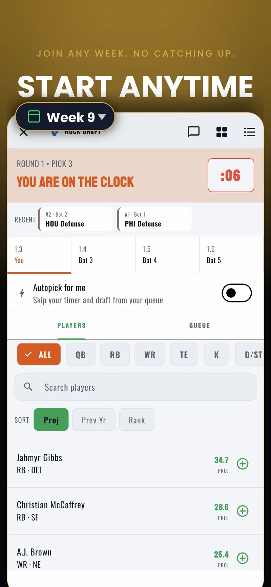
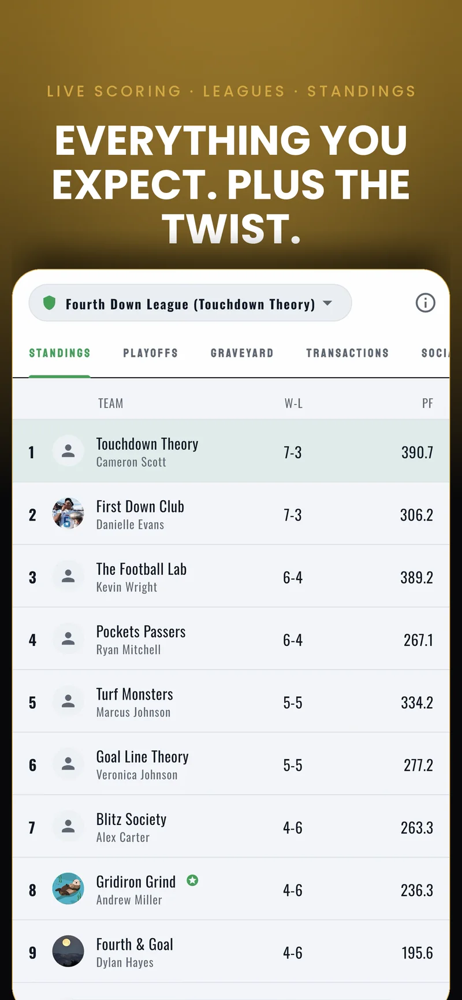

Showcase
The app itself
Screens from the shipped iOS build. Hover to pause, and click any screen to view it full size.






Concept
Why it was worth building
FantasyX re-drafts every roster every week, and players a manager has already used are locked
out of their pool for the rest of the season. That changes the engineering problem more than it
changes the game. A season-long fantasy app runs one draft per league per year; this one runs a
live, timed, multiplayer draft room every week for every league, and every started player has to
be tracked against a permanent per-team exclusion list that drafting, waivers, trades and lineup
validation all have to respect. What is normally a once-a-year showpiece became the most used
and most concurrency-sensitive surface in the product, which is why most of the work below sits
in the database rather than the client. The full product tour is at
fantasyx.net.
What I Built
What I actually built
I am the only engineer on this project. The product direction is the company's; everything
below is the engineering I did to realize it.
📐
Game rules, in code
Turned the product spec into an enforceable rule set: the graveyard's exact lock semantics, the revive economy, scoring and roster legality, and the commissioner configuration surface. Deciding how each rule is represented and enforced was the engineering problem.
🎨
UI implementation
Built all 51 screens and the design system underneath them: a semantic, theme-aware color palette with full light and dark modes, and per-NFL-team color tokens.
📱
Flutter client
A single codebase targeting iOS, Android and web. Around 45,000 lines of Dart across 359 files, organized feature-first with Riverpod for state and go_router for routing and deep links.
🗄️
Database & backend
A 46-table Postgres schema on Supabase with row level security, 99 stored procedures holding the game rules, triggers, and 30 Deno edge functions for scheduled and privileged work.
🔄
Data pipeline
Python tooling (about 12,000 lines) that seeds players, schedules, projections, injuries, odds and news, computes fantasy scoring, and can simulate an entire week or fast-forward a season for testing.
🚀
Shipping & compliance
App Store submission and review (live), Android currently in closed beta, plus privacy policy and terms, a 13+ age gate, GDPR-style data export and account deletion, moderation tooling, push infrastructure, and a Cloudflare-hosted marketing site.
Architecture
How I put it together
The guiding rule is that the game rules live in the database, not the client.
Anything a user could cheat by tampering with the app is enforced in a Postgres function the
client calls. The Flutter app is a fast view over that authority, never the source of truth.
Client
Flutter and Dart, one codebase for iOS, Android and web. Riverpod for state, go_router for routing and deep links, and a feature-first structure where each feature owns its models, pages, providers, repositories and widgets. No widget issues a query; everything goes through a repository layer.
Rules engine
99 Postgres stored procedures. Drafting, autopick, lineup validation, waiver processing, trade finalization, revive grants, playoff seeding, account deletion and data export all run server-side with their own guards.
Data
Postgres on Supabase, 46 tables with row level security, plus realtime subscriptions driving the live draft room, league chat and live scoring.
Serverless
30 Deno edge functions on scheduled crons for everything timed or privileged: draft start and autopick, waiver processing, week rollover, score and news polling, push delivery, email, and data export.
Pipeline
Python tooling that seeds players, schedules, projections, injuries and news, computes fantasy scoring, and can simulate a week or fast-forward a season, which is what made the playoff and season-end flows testable without waiting on real games.
Platform
Firebase Cloud Messaging for push, Crashlytics for crash reporting, PostHog for opt-in analytics, Brevo for email, and Cloudflare Workers hosting the marketing site.
Compliance & Launch
Getting it through review
Shipping to the App Store was a real engineering project, not a form to fill in. What I built
for it:
- A 13+ age gate rendered above the router so no route or back gesture escapes it, since neither Apple nor Google shares a birthday with the app. Answering under 13 deletes the account, and the refusal is remembered on-device so it cannot be immediately re-rolled.
- Automated data export. An edge function assembles one JSON document server-side, writes it to a private bucket and emails a signed link that expires in seven days, rate limited per account. A second function purges the file at expiry.
- Account deletion that does not corrupt a league. Personal data is destroyed while shared league records are de-identified, unplayed matchups become byes, and commissioned leagues pass to another manager, so other members' history survives.
- Native Apple sign-in rebuilt for App Review, with Google moved to an in-app Safari view on iOS while Android and web keep the browser flow.
- A full AdMob integration built and then removed before 1.0. Dropping the dependency also removed the advertising-ID permission it pulled into the merged Android manifest, so the Play data-safety declaration is accurate. The code is preserved out of tree with a documented restore path.
Hard Problems
Challenges I ran into during development
🔒
Trusting no client
Every rule that could be cheated lives in a Postgres function. The client's job is to explain a refusal well, never to enforce it.
⏱
Time as correctness
Draft windows, kickoff locks, waiver periods and bracket weeks all had to agree. Collapsing a league into an explicit state machine keyed on two fields is what made the edge cases tractable.
🔁
Idempotent scheduled jobs
Rollover, revive grants and waiver processing run on crons that can retry. Ledger tables and de-duplication keys mean a job that runs twice never double-pays.
🧭
Single sources of truth
Live and final state come from one shared model property, so the dashboard, the league tab and the matchup page can never disagree about whether a game is over.
A meaningful share of the work came out of a real beta rather than from planning: a ranking
overhaul to value over replacement, an autopick fallback that had been drafting practice-squad
players at random, draft board ordering, search and sort behavior, a late-join flow and a
live-scoring null bug all came from beta reports and shipped across 1.1.0 to 1.1.3.
The Numbers
Scale of the build
Full stack
Flutter
Dart
Riverpod
go_router
Supabase
PostgreSQL
PL/pgSQL
Row Level Security
Deno
TypeScript
Python
Firebase Cloud Messaging
Crashlytics
PostHog
Brevo
QStash
Cloudflare Workers
Sign in with Apple
Google OAuth
local_auth biometrics
Git
FantasyX is a product of FantasyX Inc. I am a co-founder and the sole engineer.
All rights to the product and its intellectual property belong to the company.
This page describes my engineering contribution to it.